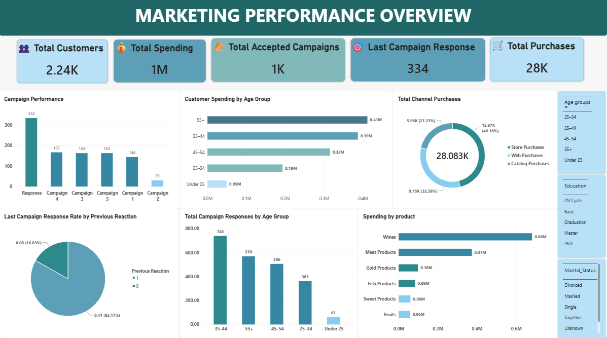
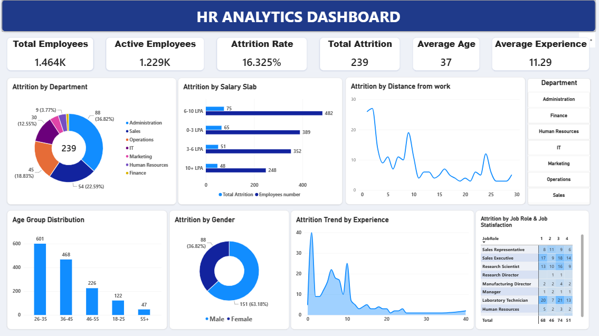
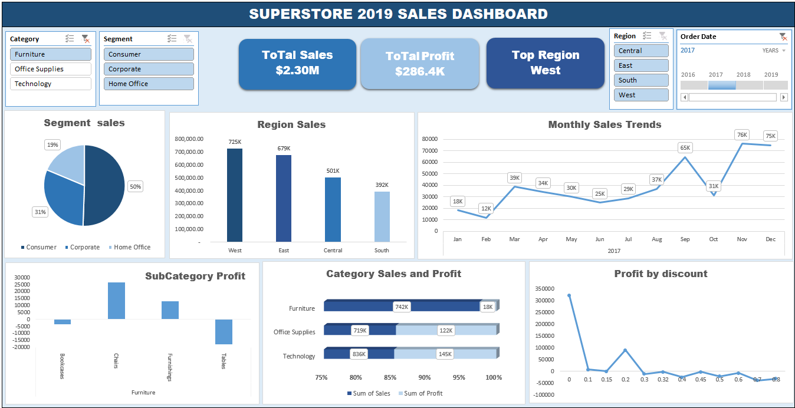
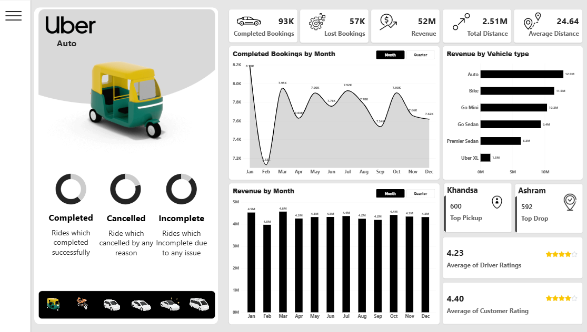

Data Cleaning & Preparation
Clean and structure messy data using Excel, Power Query, and SQL.
Deliverable: Clean, analysis-ready datasetJunior Data Analyst
Investigating messy data to uncover clear insights and smarter decisions.

WHAT I DO
I help startups and small businesses investigate messy data, uncover patterns and inconsistencies, and turn it into clear, actionable insights using Excel, Power Query, SQL, and Power BI.
I create interactive dashboards that help businesses understand their performance, spot problems, and make better-informed decisions.
Clean and structure messy data using Excel, Power Query, and SQL.
Deliverable: Clean, analysis-ready datasetInvestigate patterns, trends, inconsistencies, and key business metrics.
Deliverable: Analysis summary with key findings and visualizations.Turn analyzed data into interactive dashboards and KPIs.
Deliverable: Interactive Power BI dashboard.Build clear, updateable dashboards using Excel and Power Query.
Deliverable: Interactive Excel dashboard.Ready to find your suspects?
ABOUT ME
I’m Salma Ashour, a Computer Science and Artificial Intelligence student with a growing focus on Data Analysis.
I enjoy taking raw, messy data, finding the patterns hiding inside it, and turning those patterns into insights that people can actually understand and use.
Long before I started learning about data analysis,
I was fascinated by
crime puzzles and investigation games.
I’ve always enjoyed collecting clues, connecting information, comparing timelines, spotting inconsistencies, and searching for the detail that doesn’t quite fit.
Eventually, I realized that this way of thinking wasn’t limited to solving fictional mysteries.
Today, I use tools like Excel, Power Query, SQL, and Power BI to investigate real-world data, uncover patterns, identify meaningful insights, and turn complex information into clear, useful dashboards and reports.
For me, data analysis isn’t just about creating charts. It’s about asking the right questions, understanding what the numbers are telling us, and investigating why they look the way they do.
So, I guess I never really stopped investigating.
I just replaced the suspects with datasets.SKILLS
PROJECTS

I investigated a customer marketing dataset to understand
customer value, purchasing behavior, and campaign response.
My work included data cleaning, transformation, KPI development,
customer segmentation, and dashboard development using Excel,
Power Query, and Power BI.
The dashboard covers 2.24K customers,
1M+ in total spending, and
28.08K purchases.
The analysis revealed several patterns: higher-income customers
generated higher spending, while longer-tenure customers showed
higher customer value.
Two-year customers averaged 745 in spending and
13.90 purchases, compared with
490 in spending and
10.91 purchases among zero-year customers.
Further investigation showed that Wines generated
the highest sales, while Store purchases represented
the largest purchasing channel at 46.18%.
Campaign 4 recorded the highest campaign acceptance count, with
167 acceptances.

I investigated an employee HR dataset to understand
employee attrition patterns and the factors associated with workforce turnover.
My work included data preparation, KPI development, attrition analysis,
employee segmentation, and interactive dashboard development.
The dashboard analyzes 1.46K employees, including
1.23K active employees and
239 employees who left, resulting in an overall
attrition rate of 16.33%.
The analysis showed that Administration accounted for
the largest share of attrition at 36.82%, followed by
Sales at 22.59%. Attrition was also examined across
salary levels, age groups, experience, distance from work, gender,
job roles, and job satisfaction to identify areas requiring further
HR investigation.

I investigated the Superstore dataset to understand
sales performance, profitability, regional performance, and customer segments.
My work included data preparation, KPI analysis, regional and segment
analysis, product profitability analysis, trend analysis, and dashboard development.
The dashboard analyzes approximately $2.30M in sales
and $286.4K in profit. The
West region generated the highest sales at approximately
$725K, while the Consumer segment
represented 50% of total sales.
Technology was the highest-sales category, generating
approximately $836K. Product-level analysis also
revealed differences in profitability, with Chairs
generating approximately $27K in profit, while
Tables recorded a negative profit.
Monthly analysis showed stronger sales toward the end of the displayed
year, with November reaching approximately $76K.

I investigated an Uber booking dataset to understand
booking performance, revenue generation, vehicle-type performance, and operational trends.
My work included data preparation, KPI analysis, booking-status analysis,
monthly trend analysis, vehicle-level revenue analysis, and dashboard development.
The dashboard covers 93K completed bookings,
57K lost bookings, 52M in revenue,
and 2.51M in total trip distance, with additional
analysis of vehicle types, locations, and service ratings.
The analysis showed that Auto generated the highest
vehicle-level revenue at approximately 12.9M, followed
by Bike at 11.5M and Go Mini at 10.3M.
Monthly completed bookings fluctuated throughout the year, while monthly
revenue remained comparatively stable, generally ranging from
4.0M to 4.6M.
The dashboard also tracks booking outcomes, pickup and drop locations,
average trip distance, and customer and driver ratings, providing a
consolidated view of operational and revenue performance.
EDUCATION
University
IBM
Cisco Networking Academy — ELCC Academy
Cisco Networking Academy — ELCC Academy
Digital Egypt Pioneers Initiative — DEPI
CONTACT
LET'S WORK TOGETHER
Let's turn the data into something useful.